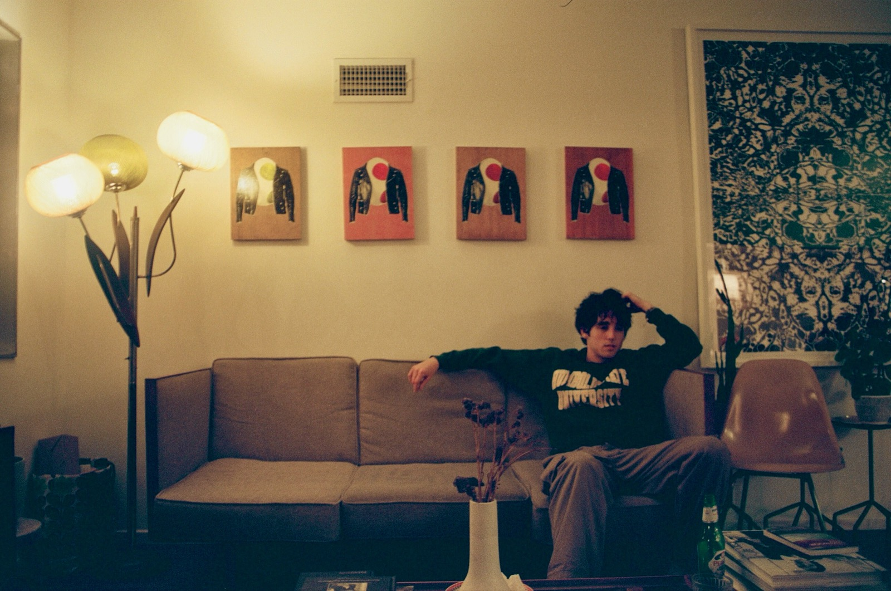

About me

My name is Owen Correll and I am a sophomore studying Integrated Design & Media here at NYU. I am from Los Angeles, California, and I have always been surrounded and fascinated by computers and videogames. I came here to NYU in order to hopefully expand my knowledge and interests within the fields.
On the side, I love film, photography, drawing, and writing. I have a minor in Art History and I love spending time in museums whenever I'm free. I hope to eventually incorporate my love for the arts into my career, whatever that may look like.